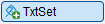
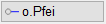
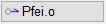
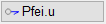
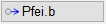
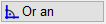
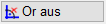
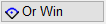
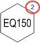

Einfügen eines im Dialog Stückliste Auswahlfenster definierten Stücklistentextes in der Zeichnung (s. Stücklisten verwalten).
1.Stücklistentext auswählen und absetzen
§Klicken Sie in der Dropdown-Liste unterhalb der Abfrage den Text an, der im Positionskreis angezeigt werden soll. [Stücklistentext]. Bestätigen Sie mit Rechtsklick.
§Geben Sie Ausrichtung des Positionskreises (in Grad) an und bestätigen Sie mit der Eingabetaste. [Winkel].

|
||||||


§Bevor Sie die Stückliste absetzen, können Sie noch einen definierten Stücklisten-Stil im Funktionsbereich wählen. [Lage].
Siehe: Einstellungen für Stücklistentexte (Dialog)
§Klicken Sie die Stelle an, an der die Stückliste platziert werden soll.
Der Stücklistentext wird in der Zeichnung angelegt.
2.Zeigerlinien hinzufügen
§Fügen Sie bei Bedarf Zeigerlinien hinzu. [Linie].
§Verwenden Sie die Optionen im Funktionsbereich, um die Darstellung und Ausrichtung einzelner Linien vorab einzustellen.
    |
Darstellung der Zeigerlinien: o.Pfei: ohne Pfeilspitze Pfei.o: Pfeilspitze oben Pfei.u: Pfeilspitze unten Pfei.b: mit Pfeilspitzen nach unten und oben |
   |
Ausrichtung der Zeigerlinien: Or an: orthogonal bzw. parallel zu gedrehten Achsen. Or aus: unabhängig vom Winkel. Or Win: rechtwinklig zur Richtung des Positionstextes. Kann ebenfalls mit gedrückter Umschalttaste (Shift) aktiviert werden. |
§Klicken Sie in der Zeichnung einen beliebigen Endpunkt an.
-Der Wert unter [Linie] wird auf 2 gesetzt. Sie können sofort den Endpunkt der nächsten Zeigerlinie anklicken. Verwenden Sie ggf. vorab eine andere Darstellungsoption.
-Um vorhandene Linien zu entfernen, klicken Sie  . Die Linien werden nacheinander entfernt. Wird die letzte Linie gelöscht, gelangen Sie wieder zur Abfrage [Lage].
. Die Linien werden nacheinander entfernt. Wird die letzte Linie gelöscht, gelangen Sie wieder zur Abfrage [Lage].
§Beenden Sie die Linienangabe durch Rechtsklick.
3.Faktor für die Stückliste angeben
§Geben Sie einen Faktor für die Stückliste ein, indem Sie einen Wert eintippen und bestätigen oder einen aus der Dropdown-Liste auswählen. [Faktor für Stückliste].
-Als Stücklistenfaktor wird die Anzahl der Zeigerlinien vorgeschlagen. Mit Rechtsklick können Sie den Wert übernehmen.
-Um den Stücklistenfaktor an der Positionsumrandung anzuzeigen, aktivieren Sie die Option [FaktAn] im Funktionsbereich. Der Faktor wird nach dem Bestätigen der Abfrage angeschrieben. Auf dem gedruckten Plan ist der Faktor nicht sichtbar.

-Wenn die Positionierung nicht gezählt werden soll, geben Sie in der Eingabe 0 (Null) ein und bestätigen Sie mit der Eingabetaste.
Siehe auch:
·Stückliste auf dem Plan aktualisieren
Zugehörige Referenz: